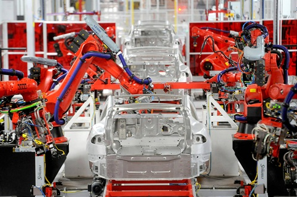
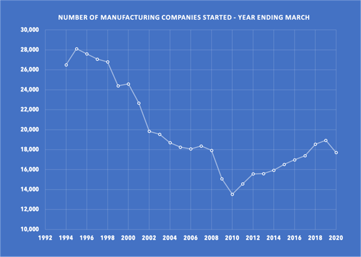

Pros
- Control over product quality and design
- Stronger brand control
- Better control over the supply chain
- High costs to start
- Environmental regulations
- Competition from cheaper regions
Choosing to manufacture your own products gives you real power over every detail you decide exactly how your product looks and performs, so the quality and design stays true to your vision. That also means your brand can stay consistent, reliable and meaningful to customers, and you can closely manage your supply chain so you’re less vulnerable to delays or weak links. On the flip side, getting started takes serious investment buying machinery, securing premises, setting up systems, hiring skilled people so costs can pile up fast. You also have to stay on top of environmental laws, which are getting stricter, emissions standards, waste controls, energy efficiency requirements, and so on. And competition from cheaper manufacturing regions can really eat into your margins unless you’re offering something special like premium quality, unique design, local credentials, or fast turnaround.
Recession resilience
Manufacturing in NZ has had a rough patch, with many months in a row where the purchasing managers index (pmi) showed a decrease output. New orders low, and business confidence low. But there have also been signs of recovery, in early 2025 the sector finally moved back into expansion, with production and new orders rising, before slipping again as demand cooled. Some firms fared better than others those with leaner cost structures, tighter supply chains, or good export channels held up, while those exposed to high input costs, weak local demand, or stretched finances suffered most.

Number of manufacturing businesses started each year
How could you start?
Starting a manufacturing business takes a lot of planning and hard work. First, you need to figure out what product you want to make and make sure there’s enough demand for it. Then, you’ll have to find a suitable location, buy the right equipment, and hire skilled people to run the machines and handle production. It’s also important to set up good processes to keep quality consistent and manage your supply chain so you don’t run out of materials. On top of that, you need to sort out all the permits and follow the local regulations, especially around health and safety. It’s a complex process with many challenges, and success isn’t guaranteed.